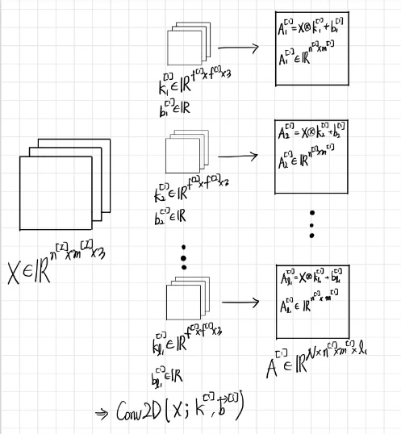
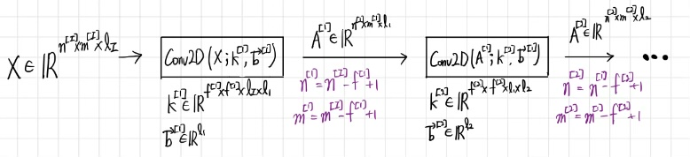

CNN(Convolutional Neural Network)
CNN’s Structure

(사진 0) https://www.ml-science.com/convolutional-neural-networks
- 앞 부분이
Feature Extractor, 뒷 부분이FC layer이다. Feature Extractor에서는 말 그대로 사진의 특징을 추출하는 부분이다.FC layer에서는 추출된 특징을 가지고 학습하는 부분이다.
Feature Extractor

(사진 1) https://d2l.ai/chapter_convolutional-neural-networks/lenet.html
- 다음은 LeNet Architecture의 구조이다.
- 28 x 28 imgae의 사진에서 feature를 추출하는 모습을 대략적을 보여주고 있다.
- Feature Extractor는 CNN에서 메인이 되는 부분이다.
1. Convolution
- (사진 1)의 28x28 image에 보이는
파란색 사각형이 이미지를 훑으면서 Feature를 추출하고 있다. 파란색 사각형은 Convolutional filter(Conv filter), kernel 등으로 불린다.- kernel의 사이즈는 3x3, 5x5, 7x7, 등 다양하며, 경우에 따라 사용되는 사이즈가 다르다.
- Striding
- kernel이 image를 훑는 과정에서 몇칸씩 이동할 것인지 정하는 개념이다.
- 예를 들어 striding=1이라면, kernel은 한칸씩, striding=2라면, kernel은 두칸씩 이동한다.
- 다음은 Striding=1인 kernel이 image를 훑는 과정을 시각화 한 것이다.

(사진2) https://stats.stackexchange.com/questions/296679/what-does-kernel-size-mean/296701
- 사진(2)에서는 3x3 kernel이 쓰였다.
- kernel이 이동할 때 마다, kernel에 적혀진 숫자와 image의 pixel을 곱하고 더한 뒤에(합성곱을 해준 뒤에), 한 pixel에 나타낸다.(9개의 pixel \(\rightarrow\) 1개의 pixel로 변환)

(사진 2.5) https://jeiwan.net/posts/til-convolution-filters-are-weights/
- Conv filter 의 간단한 예시와 결과이다.
- Padding
- 9개의 pixel이 1개의 pixel로 축소됨에 따라 원래 이미지의 사이즈는 줄어들 수 밖에 없다.
- 사이즈 축소를 막기 위해 사용된 것이
padding으로 (사진 2)에서 보이는 것 처럼, 화소 0값으로 pixel들을 둘러 쌓고 있는 것을 말한다.
(사진 1) https://d2l.ai/chapter_convolutional-neural-networks/lenet.html
- (사진 1)을 다시 살펴보자. C1 feature map에는 6개의 feature맵이 생성되었다.
- 6개의 kernel이 사용되었다는 말과 동치이다.
- C1 feature map \(\rightarrow\) S2 featuremap 과정을 살펴보면, feature map 크기가 줄었다.
- 이는 feature map의 size는
padding으로 인해 유지하였지만, 0이 아닌 pixel의 수는 줄어들었기 때문이다. Pooling때문이다.
- Pooling

(사진 3) https://paperswithcode.com/method/max-pooling
- (사진 3)은 2x2 Max Pooling을 시각화 한 것이다.(Max 이외에도 Average, Min Pooling등이 가능하다.)
- image를 2x2로 쪼갠 뒤에, 그 중에서 가장 큰 값만 추출하는 것이다.
- Max Pooling을 사용하는 이유는, 주변 pixel 중에서 최대값만 추출하여(특징이 가장 잘 나타나는 pixel만 추출하여), 좀 더 세부적인 특징을 추출하기 위함이다.
- Max Pooling을 하게 되면 0이 아닌 pixel의 수가 줄면서(=특징이 가장 잘 나타나는 pixel만 남으면서) 좀 더 자세한 특징들을 추출할 수 있다.
- 즉, 적어진 pixel들을 같은 size의 kernel이 지나가면서 더 자세한 특징들을 추출할 수 있게 된다.
- Generalization

(사진 4)

(사진 5)
(사진 4)
- 앞서 설명했던 내용을 그림으로 나타내면 다음과 같다.
- 컬러 이미지 \(X\)는 첫번째 kernel을 통과하는데, 이때 kernel의 개수는 \(l_1\)개이고, kernel의 사이즈는 \(f^{[1]}\) x \(f^{[1]}\)이다.
- \(k_{i}^{[1]}\) 커널을 지나간 이미지는 \(A_i^{[1]}\)로 표현된다. (\(A_i^{[1]} \in R^{n^{[1]} \,\text{x} \,n^{[1]}}\))
(사진 5)
- (사진 4)과정을 계속 이어나가는 것을 시각화한 것이다.
- kernel을 지나가는 과정에서 padding과 striding=1이 적용되었다.
- Visualization
- (사진 4)와 (사진 5)를 시각화한 것이다.

https://stats.stackexchange.com/questions/296679/what-does-kernel-size-mean/296701